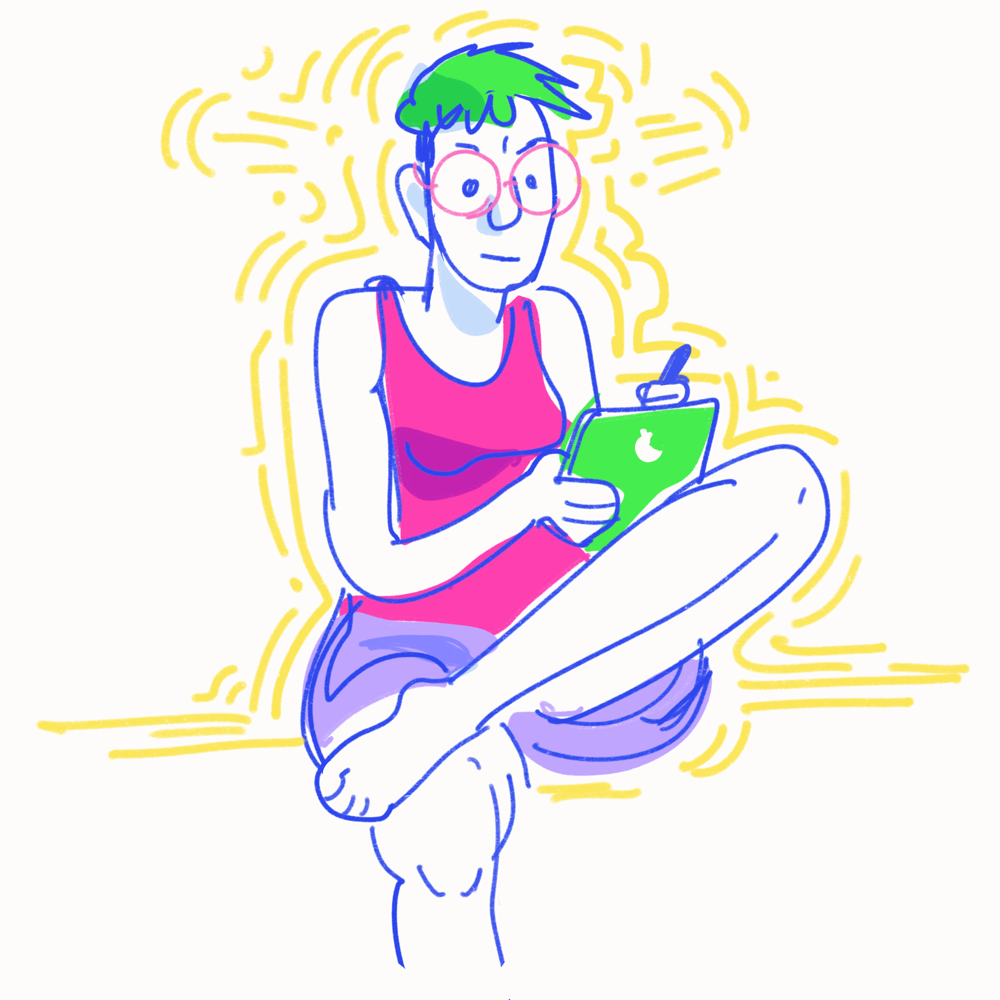

About

Sid is an artist / illustrator type living in durham, nc.
They make lighthearted illustrations of critters, flowers and their local scenery. They also make comics on relatable topics such as gender theory, being a little rat boy, and the emotional importance of owning a pair of cowboy boots. They like worms, cats, watercolors and the color lilac.